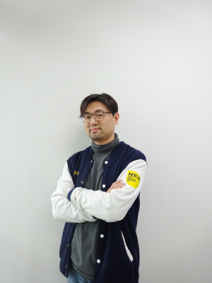

Devstamp
Korea Blockchain Community Day
2018년 12월 18일 (화) 09시 ~ 18시30분
한국과학기술회관 지하 1층 대회의장
서울시 강남구 테헤란로 7길 22
Register
Intro
블록체인과 암호화폐 기술이 발전하면서 해당 기술에 대한 자발적인 연구,개발 커뮤니티가 활성화되고 있습니다.
올 한해 , 블록체인 기술 관련 주요 커뮤니티들과 플랫폼 회사들이 생각하는 현재 블록체인 기술의 문제점과 해당 문제점을 어떻게 해결할 것인지 심도깊게 논의하고 , 주요 블록체인 회사들의
기술과 2019년을 전망해 보고자 합니다.
또한 주요 블록체인 플랫폼을 발표만으로 단순히 듣고 보는 형식에서 나아가 직접 개발을 경험해 볼 수 있도록 이더리움, 아이콘, 람다256의 루니버스 핸즈온랩 교육 세션을 운영합니다.이를
통해 개발자들과 블록체인 기술에 관심있는 분들이 보다 부담없이 참여하여 블록체인 기술을 즐기는 축제의 장이 될 것 입니다. 본 행사는 이더리움 연구회와 블록체인 커뮤니티에 의해 자발적으로
준비,운영되고 있습니다.
Master node
장소: 대회의실
주제: 블록체인 플랫폼의 현재와 미래 / 블록체인 플랫폼 기반 기술
09:30 ~ 10:00
대회의실
블록체인과 공개 소프트웨어
Speaker: nipa
10:00 ~ 10:30
대회의실
이더리움 플랫폼의 현재와 향후 마일스톤
이더리움 플랫품을 중심으로 현재 블록체인 기술의 여러 문제점들을 살펴보고 향후 전망을 해봅니다.
Speaker: 박재현
박재현 람다 256 연구소장은 포항공대에서 정보통신(석사)을 전공했으며 1994년 부터 현재까지 S/W 엔지니어, 창업가 , 벤처투자가로 활동중이며 ZDnet Korea, 전자신문 등에 블록체인 및 암호화폐 관련 컬럼을 기고중이고 “코어 이더리움 프로그래밍”책을 집필하였다. 또한 2017년 부터 이더리움 연구회를 설립하여 연구 활동을 하고 있으며 블록체인 기반 공유경제 플랫폼인 BlueWhale Foundation을 설립하였다. 현재 두나무 블록체인 연구소 람다256에서 차세대 블록체인 플랫폼인 루니버스를 개발,서비스중이다. 주요 프로젝트로는 삼성전자(상무이사)에서 삼성페이와 삼성 챗온 메세지 서비스 등의 개발을 주도했고 SKT(전무이사) 공유경제 플랫폼 히든 등 신규 사업을 담당하였다.
10:30 ~ 10:35
대회의실
Break: 5 min
10:35 ~ 10:50
대회의실
EOS Mainnet and ecosystem: From a Technical Perspective
올해 EOS world에 있었던 일을 소개하고 개발 예정인 EOSIO 기능과 플러그인에 대해 조망합니다. 시스템기술과 관련된 거버넌스, 보안사고, Finality, IBC와 관련된 기술적 이슈를 정리하고, 블록체인 지형에 미칠 기술적 영향과 전망을 다룹니다.
Speaker: 권용길
권용길 네오플라이 대표는 서울대학교 컴퓨터공학 학사와 석사 학위를 받고 삼성전자에서 근무하였다. 2001년 네오위즈에 개발자로 합류하였다. 이후 일본 자회사 게임온을 거쳐 네오위즈CTO를 역임하였으며, 2013년부터 현재까지 네오위즈의 스타트업 엑셀러레이터 NEOPLY에서 스타트업을 발굴하고 육성하는데 주력하고 있다. 대표적 포트폴리오로는 애니팡을 개발한 선데이토즈, 카카오모빌리티가 인수한 럭시 등이있다. 최근 블록체인 프로젝트에 크립토 투자와 액셀러레이팅에 힘을 쏟고 있으며, 제3세대 블록체인 EOS의 블록프로듀서 EOSeoul의 대표를 맡아 블록체인 생태계 활성화를 위해 총력을 다하고 있다.
10:50 ~ 11:05
대회의실
ICON 개발 현황과 미래
ICON 프로젝트는 ‘연결’을 통해 우리의 일상을 풍요롭게 만들기 위해 시작되습니다. ICON 프로젝트는 특정 블록체인 또는 커뮤니티 내 Node들의 연결 뿐만 아니라 커뮤니티와 커뮤니티 간 연결에 대한 연구이며, 가상화폐세계 뿐만 아니라 현실세계에 적용하는 것을 목적으로 시작되었습니다. 이미 메인넷을 론칭했으며, 스마트컨트랙트를 위한 실행환경 등의 개발 완료하여, 다양한 블록체인 기반의 서비스를 개발 할 수 있는 기반을 마련하였습니다. 조만간 다양한 블록체인 기반 dApp들이 나올 것으로 기대됩니다. 이번 발표의 내용을 다음과 같습니다.
- ICON 개요 및 주요 개념
- ICON 현황 및 로드맵
- Blockchain Transfer Protocol
- SCORE(Smart Contract) 개발환경
Speaker: 류혁곤
Edward Ryu, CTO at ICONLOOP, is highly skilled software development professional bring about 20 years in software design, development and integration.
- Mastes’ degree at Computer Science & Engineering, POSTECH
- CTO at ICONLOOP, Inc. (current)
- Senior Director at Selvas Healthcare, Inc.
- CTO at Infraware Technology, Inc.
- Senior Software Engineer at XCE, Co., Ltd.
- Software Engineer at LG Electronics
11:05 ~ 11:20
대회의실
라인 블록체인 플랫폼 소개 및 마일스톤
라인이 발표한 블록체인 플랫폼에 대한 소개와 향후 마일스톤에 대해 소개 드립니다.
Speaker: 이홍규
이홍규 언체인 대표는 라인과 아이콘(ICON)의 조인트 벤처인 언체인의 초대 대표이사를 역임하고 있으며, 이에 앞서 아이콘(ICON) 프로젝트에서 기술 디렉터를 담당한 바 있다. 언체인은 라인에서 출시될 콘텐츠, 커머스, 소셜, 게임, 암호화폐 거래소 등 다양한 서비스에서 지불 및 보상수단으로 사용될 ‘링크(LINK)’의 구심점 역할을 하는 ‘링크 체인(LINK Chain)’ 플랫폼 개발을 주도하고 있다.
11:20 ~ 11:35
대회의실
블록체인 문제점과 해결책으로서 루니버스 및 향후 로드맵
루니버스(Luniverse)는 실제 블록체인을 자사 서비스에 적용하고자 하는 다양한 기업들의 고민에서 출발했습니다. 블록체인 기술이 가지고 있는 가능성은 무한하지만 실제로 일반적인 기업들 및 대중적인 개발자들과 고객들에게 다가가기에는 아직 많은 문제점들을 가지고 있습니다. 블록체인 기술이 몇몇 소수 지지자들만의 전유물에 머무르지 않고 일반 대중들에게 다가가기 위해서는 어떠한 문제들을 해결해야 하는지 그리고 루니버스는 이러한 문제를 해결하기 위해 어떤 노력을 기울이고 있는지 살펴보고자 합니다. 더불어 루니버스는 람다256 혼자만의 기술로 만들어지지 않습니다. 다양한 파트너사들과 어떻게 협업하고 함께 만들어 가고 있는지 함께 소개드리도록 하겠습니다.
Speaker: 박광세
박광세 람다256 사업이사는 서울대학교 경영학과를 졸업한 뒤 SK Telecom에서 무선 인터넷 컨텐츠 사업을 담당하였다. 이후 에듀테크 스타트업 Eduflo를 공동 창업하여 NHN, Nintendo 및 다양한 교육기업과 제휴하여 온라인 게임 및 교육용 솔루션을 개발하였다. Eduflo를 매각한 뒤에는 미래에셋PEF가 인수한 와이디온라인에 CSO로 합류하여 갓오브하이스쿨 등 다수의 성공작을 출시하며 글로벌 모바일 게임 개발사로 리포지셔닝하였다. 현재 두나무 블록체인 연구소에 합류하여 연쇄창업가 경험을 기반으로 전세계 스타트업들이 블록체인 기반의 가치있는 서비스를 만들어갈 수 있도록 Luniverse 에코시스템을 구축해가고 있다.
11:35 ~ 12:30
대회의실
Panel discussion: 현재 문제점과 해결 방안
- 진행: 박재현
- 패널: 권용길/류혁곤/이홍규/박광세
12:30 ~ 13:30
대회의실
Lunch time
13:00 ~ 13:30
대회의실
아하(Aha), Semi-Decentralized Knowledge Commerce 플랫폼
탈중앙화는 어떤 네트워크 내에서 일어난 사건에 대한 사실과 의사결정에 관련된 합의를 중앙의 권위있는 집단으로부터 네트워크 내 다수에게 분산시키거나 위임하는 프로세스라고 합니다. 탈중앙화의 분권화적 철학적인 가치는 분명하지만, 아무리 좋은 기술 개념이라도 일반 사용자가 이해하기 어렵고, 사용하기 어렵다면 좋은 기술이라고 하기 어려울 것입니다. 서비스를 운영하는 입장에서는 블록체인의 불편한 사용성에 발목을 붙잡히게 됩니다. 모든 것을 탈중앙화해야만 한다는 철학적 프레임에 갇혀 사용자 친화적인 서비스를 제공하는 데 실패한다면 결국 서비스를 성공시키기 힘들게 될 것입니다. 비트코인이 세상에 모습을 드러낸지 약 10년이 흘렀고, 기술적으로 더 진보한 플랫폼이 계속 등장하고 있지만, 트랜젝션 수수료 문제, 트랜젝션 서명 UX 등 아직까지 end user가 사용하기 좋은 플랫폼이나 DApp은 많지 않습니다. 이러한 복잡한 개념과 UX로부터 비롯된 불편함은 사용자의 흥미를 자연스레 떨어트리고 관심을 멀어지게 합니다. 이것이 아마도 대부분의 DApp 들이 실패하는 주요 원인이라고 생각합니다. 그래서 저희는 다양한 사례를 통해
- DApp 의 사용 실태
- 블록체인이 개선해야할 점
- 사용자 친화적인 서비스에 초점을 맞추어 개발된 Aha 의 DApp 설계 방식
- Aha 의 토큰 이코노미
- Aha 베타 서비스 운용 이후 수집된 통계
Speaker: 이희승
이희승 더코퍼레이션 CTO
- Technical Univesity of Darmstadt, 전산공학 학사 전공
- Oracle Germany, 소프트웨어 엔지니어
- LG 전자, 소프트웨어 엔지니어
- 현 더코퍼레이션 CTO 재직
Branch 1
장소: 대회의실
주제: 블록체인과 사용성 / 보안 / 자산 거래
13:30 ~ 14:10
대회의실
30분만에 dApp 만들기
블록체인 기술이 대중화되기 위해서는 일반 대중들이 사용할 수 있는 DApp 이 출현해야 한다. 현재 많은 기업들이 DApp 을 개발하고 싶어하지만 블록체인 개발자의 부족 문제로 DApp 을 개발에 선뜻 뛰어들지 못하고 있다. DApp 개발과 확산에 장애가 되는 문제를 살펴보면 다음과 같다.
- (블록체인 개발자의 부족 문제)블록체인의 기본 원리, 컨센서스 알고리즘, 비트코인이나 이더리움 같은 블록체인 네트워크 구축 및 운영, 클라우드 인프라, 스마트 컨트랙트 개발 등을 담당할 수 있는 블록체인 개발자가 부족하다.
- (불편한 개발 환경) 현재 이더리움 스마트 컨트랙트 개발에 RemixIDE 가 가장 많이 사용되고 있다. DApp 을 개발하기 위해서는 일반적인 Application 개발 환경과 RemixIDE 로 이중화된 개발 환경을 사용해야 하는 불편함이 있다.
- (컨트랙트 보안 이슈) 스마트 컨트랙트는 금전적인 자산을 직접 다루기 때문에 보안 이슈가 발생하면 엄청난 금전적인 손실을 볼 수 있기 때문에 스마트 컨트랙트의 보안 이슈를 조기에 발견하고 해결하는 것이 아주 중요하다.
Speaker: 오재훈
오재훈 두나무 람다256 연구실장은 넷스루에서 웹 클릭스트림 분석 시스템을 개발하였으며, 이더리움 연구회 1기로 활동하며 이더리움 소스 코드를 분석하였다. 안전한 스마트 컨트랙트를 개발하기 위한 프랙티스에 관심이 많다. 현재는 두나무 연구소에서 테크리드로 차세대 블록체인 플랫폼 개발에 참여하고 있다.
14:10 ~ 14:50
대회의실
사용자 친화적 Wallet 서비스 개발
비트베리는 사용성을 극대화하기 위해 사용자에게 개인키를 노출 시키지 않는 Custodial wallet service 입니다. 사용자는 키관리를 직접하지 않고 쉽고 안전하게 서비스를 이용할 수 있고, 토큰 이코노미를 적용하고자 하는 개발사는 비트베리 API를 통해 적은 리소스로 빠르게 서비스를 개발할 수 있습니다. 이번 발표에서는 비트베리 개발 과정 중 있었던 일들과, 베트베리 서비스의 백엔드 구조에 대한 간단한 설명, 그리고 비트베리가 제공하는 API에 대한 설명과 더불어 앞으로 비트베리가 나아갈 방향에 대해 공유하고자 합니다.
Speaker: 장성훈
장성훈 루트원소프트 대표
- 2011~2016 카카오 SW Engineer
- 2011 로티플 Co-founder/CTO
- 2010 LG전자 선임연구원
- 2007~2009 티맥스소프트 전임연구원
- 2005~2007 카이스트 CS 석사
- 2002~2005 카이스트 CS 학부
14:50 ~ 15:00
대회의실
Break: 10 min
15:00 ~ 15:40
대회의실
지속적인 보안을 위한 오픈소스 취약점 분석 도구
GitLab의 2018 Global Developer Report에 따르면 높은 생산성을 가지는 팀들은 DevOps 문화를 가지는 경향이 있으며, 개발 생애주기(Development Lifecycle)를 자동화하는 것에 매우 높은 우선순위를 가지고 있다. 이러한 배경에서 효율적인 개발 프로세스를 유지하면서 보다 안전한 소프트웨어 개발을 위한 보안 개발 생애주기(Security Development Lifecycle, SDL)도 많은 주목을 받고 있다. 하지만 전통적인 소프트웨어 개발 프로세스와는 다르게 블록체인 시스템 개발에서는 SDL의 적용이 쉽지 않다. 상대적으로 짧은 역사로 인해 아직 SDL 구성을 위한 보안 서비스들이 아직 많이 개발되지 않았기 때문이다. 이번 세션에서는 SDL 구성을 위한 Sooho의 오픈소스 프로젝트를 소개하고 살펴본다.
Speaker: 박지수
박지수 Sooho CEO
- (현) Sooho, CEO
- (현) Center for Software Security and Assurance (CSSA), Researcher
- (전) 두나무 주식회사, SW Engineer
15:40 ~ 16:20
대회의실
블록체인을 위한 하이브리드 전자지갑 보안기술
Hot Wallet과 Cold Walllet의 장점을 모두 가진 Hybrid Wallet 개발을 위한 보안기술들
Speaker: 박인신

- ㈜노르마 연구개발팀장(현)
- ㈜네오플 게임보안팀장(2006~2013)
- 신구대학교 IT미디어과 정보보안강사(2014~)
- 성균관대학교 정보보호학석사(2012)
16:20 ~ 17:00
대회의실
이종 체인간 연동 기술
Allbit 는 국내에서 유일하게 블록체인을 실제 프로덕션에서 활용하고 있는 거래소로 자체 블록체인을 기반으로 이더리움 체인의 코인과 토큰들을 성공적으로 연동하고 있습니다. 또한 내년 상반기내로 비트코인도 자체 체인으로 연동하고 서비스 할 예정에 있으며, 이는 전세계 최초의 비트코인-거래소 자산 연동기술입니다. 이번 발표에서는 Allbit.com 에서 실제 서비스 중인 이종체인간 자산 연동 기술, 출시 예정인 비트코인 자산 연동 기술, EOS, Luniverse 체인의 자산 연동 계획에 대해서 설명합니다.
Speaker: 최종식
- 現 오지스 CTO
- 前 V8 CTO
- 前 파티게임즈 개발팀장
- 前 이스트소프트 zum개발팀장
- 서울대학교 컴퓨터공학부 최우등 졸업
- 대한민국 인재상 수상
17:00 ~ 17:10
대회의실
Break: 10 min
17:10 ~ 17:50
대회의실
Security Token 플랫폼 개발
증권형 토큰 프로토콜 특성이 무엇인지와 증권형 플랫폼으로서 이더리움의 한계점을 살펴봅니다. 증권형 토큰 플랫폼이 가져야 할 기술적 요구사항에 코드체인은 어떻게 대응하고 있는지 이야기해 보고자 합니다.
Speaker: 서광열
서광열 코드박스 대표
- (현) Kodebox, CEO
- (전) Company 100, CTO
- WebKit Committer
- Ecma TC39 위원회 위원
17:50 ~ 18:30
대회의실
체리: 루니버스 기반 기부 및 공유 플랫폼 개발
- 체리 서비스 필요성: 체리서비스의 비즈니스 및 사회적 필요성
- 체리 서비스 소개: Cherry(체리 – 기부 및 공유 플랫폼)는 CaaS (Charity as a Service)로써 AWS 위에 하이퍼레저 패브릭 및 루니버스 블록체인 플랫폼 기반의 기부 서비스 입니다. 기부자는 체리 기부앱으로 PG사(결제대행사)를 통해 체리 운영사(비영리재단등 후원사)로부터 수시 또는 정기약정으로 토큰 구매 후 각 종 수혜단체 또는 수혜자들에게 토큰을 기부하고 수혜단체 또는 수혜자는 체리 운영사에 기부토큰 정산 신청을 통해 기부금을 입금 받게 됩니다. 체리는 기부의 투명성과 확보와 중간 결제 수수료 없이 기부를 할 수 있는점과 기부시 복잡한 결제 단계 없이 빠르고 간편하게 기부를 쉽게 할 수 있는 장점을 가지고 있습니다.
- 체리 서비스 활용 비즈니스 도메인 예시: 체리가 유용하게 사용될 수 있는 다양한 비즈니스 도메인에 대한 소개
Speaker: 이수정 / 박성호

Branch 2
장소: 소회의실 2
주제: 핸즈온랩
13:00 ~ 14:40
소회의실 2
AWS 환경에서 이더리움 개발 실습
- AWS 환경 세팅하기(Cloud formation 사용한 geth 설치)
- Geth 실습으로 블록체인 쉽게 이해하기
- ERC20토큰 기반 크라우드 펀딩 dApp 개발하기
- Ethereum on Kubernetes
Speaker: 박혜영/박천구
14:40 ~ 14:50
소회의실 2
Break: 10 min
14:50 ~ 16:30
소회의실 2
ICON Network에 SCORE(Smart Contract On Reliable Environment) 배포하기
*본 강의에서는 Docker를 사용합니다. 원활한 강의와 실습을 위해, 운영체제에 맞는 Docker를 미리 설치하시기 바랍니다. 본 발표는, 발표에 참여한 모든 참여자들이 ICON Network에 SCORE(Smart Contract On Reliable Environment) 배포하는 과정을 이해하는 것을 목표하고 있습니다. ICON이 제공하는 개발자용 에뮬레이터인 T-Bears를 통해 Sample Code를 만들어보고, Sample Code를 기반으로 SCORE를 만들어보겠습니다. 만들어진 SCORE를 ICON Test Net에 배포하고, 결과를 확인하겠습니다.
- Docker로 간단하게 개발환경 구축하기
- Sample SCORE 배포 연습해 보기
- SCORE 작성 및 테스트넷에 등록하기
- 배포된 SCORE 호출하기
Speaker: 나라
노매드커넥션/연구원
- 인하대학교 졸업 (2017. 08)
- 노매드커넥션 입사 (2018. 08)
- 포항공대 mooc 강의 (2018. 10)
- Study pi 아이콘 강의 (2018. 11)
16:30 ~ 16:40
소회의실 2
Break: 10 min
16:40 ~ 18:30
소회의실 2
루니버스 BaaS 실습 - 두나무 Lambda 256
두나무 람다256 연구소 에서 개발하고 있는 차세대 블록체인 서비스 플랫폼인 루니버스를 소개합니다. 루니버스를 이용하여 웹 UI 만으로 사이드체인을 배포하고, ERC20, ERC721 토큰과 사용자 정의 컨트랙트를 배포하고 Open-API 를 이용해서 배포된 토큰과 컨트랙트를 이용해서 기존 Application 을 DApp 으로 전환하는 방법을 배우고 경험할 수 있습니다.
- 루니버스 소개
- Token Bridge Protocol
- 루니버스를 통한 토큰 생성 및 DApp 개발
- 루니버스 체인 생성
- 루니버스 토큰 서비스를 통한 ERC20, ERC721 토큰 생성
- 기존 서비스에 해당 토큰 적용하여 DApp(유기견보호소) 만들기
- Open-API 를 이용해서 토큰 거래하기
- 스마트컨트랙트 작성 및 루니버스 Sidechain 에 배포하기
- Open-API 를 이용해서 스마트 컨트랙트 함수 호출하기
Speaker: 오재훈
오재훈 두나무 람다256 연구실장은 넷스루에서 웹 클릭스트림 분석 시스템을 개발하였으며, 이더리움 연구회 1기로 활동하며 이더리움 소스 코드를 분석하였다. 안전한 스마트 컨트랙트를 개발하기 위한 프랙티스에 관심이 많다. 현재는 두나무 연구소에서 테크리드로 차세대 블록체인 플랫폼 개발에 참여하고 있다.
Branch 3
장소: 중회의실 2
주제: 커뮤니티 랩
13:30 ~ 14:10
중회의실 2
Cryptoeconomic analysis of Casper FFG
암호경제학 측면에서 Casper FFG의 보상 및 처벌 매커니즘을 분석한다. 게임이론에 입각한 각 플레이어들의 행동과 다양한 Casper 공격 상황들을 정규형으로 풀어본다. 이후, 경제적 인센티브 제공을 통해 각 플레이어들의 최선의 반응 전략을 하나하나 소개한다.
Speaker: 박시은
박시은 FSL Research Analyst
- 가정의학과 전문의
- 대한가정의학회 정회원
- 이화여자대학교 의과대학 의학과
- 아주대학교 의료원 가정의학과 전임의
- (현) FSL research analyst
14:10 ~ 14:50
중회의실 2
Distributed systems with Consensus Algorithm
분산시스템과 블록체인에서 논의가 되는 네트워크 상에서의 합의 과정을 BFT를 통해 알아본다. BFT에서부터 이를 적용하는 프로젝트들을 살펴보고 Pbft를 통해 합의하는 과정과 이를 이용하는 PoA에 대해 알아본다.
Speaker: 홍종화
홍종화 머클라인 마케터
- 숭실대학교 산업정보시스템공학과
- 머클라인 블록체인 엑셀러레이팅 프로젝트 마케터
- 이더리움연구회
14:50 ~ 15:00
중회의실 2
Break: 10 min
15:00 ~ 15:40
중회의실 2
Geth 들여다보기(Look into Geth)
go-ethereum(geth) 소스코드를 가지고 이더리움 노드 동작 방식을 소개한다. 어떻게 노드가 시작해서 p2p 방식으로 동기한 트랜잭션을 실행하고 블록을 채굴하는지 살펴본다. 이더리움 연구회 코어 분과는 이더리움 노드 소스코드를 분석하고 오픈소스에 기여하고 있다. 한국 블록체인 커뮤니티 데이에서 소스코드를 분석한 자료를 공개하며 그중 일부를 발표한다. 노드 기동 절차, 트랜잭션과 블록 동기화, 트랜잭션 실행에 따른 상태 변화, 채굴 과정을 발표할 예정이다.
Speaker: 전정호/김지윤
15:40 ~ 16:20
중회의실 2
메타마스크 코드 분석, 월렛 개발과 시연
메타마스크를 코드 레벨에서 분석한 결과물을 공유한다. 이에 대한 대표적인 내용은 다음과 같다.
- 메타마스크 빌드 및 설정
- 주요 라이브러리 설명
- 크롬 익스텐션 빌드
- 빌드 이슈
- 아키텍쳐 및 주요 인터페이스
- 주요 디렉터리 및 파일 설명
- 빌드 접근 방법 및 개발 프로세스
- UI 컴포넌트 (React, Redux)
- 아이덴티콘 소개
- 컨트리뷰트 방법
- 메타마스크 모바일 소개
- 기존 인터페이스 및 개발상의 문제점
- VueJS의 접목
- core wrapper 라이브러리 소개
- 웹 익스텐션 월렛 개발 과정
- 시연 시나리오 설명
- Wallet 기본 작동 시연
- 웹에서 QR 코드를 통한 결제 기능 시연
- App to App으로 결제 기능 시연
- Eth-lightwallet 소개 및 사용법
- Ether 전송과 Token 전송의 차이
- 안드로이드의 TrustZone(keystore) 소개
- 서버 연결을 위한 자체 Node vs infura
- 기타 개발 과정에서 발생한 이슈 공유
Speaker: 박경호/장주환
16:20 ~ 17:00
중회의실 2
Cosmos 특징 및 개발 현황과 향후 커뮤니티 형성 전략
Internet of Blockchains를 표방하는 코스모스 네트워크의 특징과 개발 현황을 공유하고
메인넷 론치까지의 마일스톤을 점검한다. bPoS(bonded Proof of Stake)의 특성을 반영하기
위해 필요한 거버넌스 모델과 커뮤니티 형성 전략에 대해서 논의한다.
- 코스모스와 텐더민트 컨센서스
- IBC(Inter BlockChain)와 Peg zone
- GoS(Game of Stake) 진행 현황
- Cosmos Validators
- Atom과 Photon
- 거버넌스 모델과 커뮤니티 형성
Speaker: 이기호
코스모스토크 ,bp-ratings 공동창업자
에듀테크 스타트업 ㈜투데잇의 공동창업자/운영이사로 기업전략∙사업개발 분야를
맡아왔다. 현재 EOS의 Worker Proposals Emergency Committee Nominees 중의 하나이며,
EOS Alliance 한국 그룹에서 첫 Referendum을 함께 준비하고 있다. EOS Block
Producers의 Watchdog 역할의 BP Ratings와 한국 최초 코스모스 커뮤니티인 Cosmos
Talk를 운영하고 있다.
17:00 ~ 17:10
중회의실 2
Break: 10 min
17:10 ~ 17:50
중회의실 2
하이퍼레저 기반 토큰 플랫폼
많은 사용자와 트래픽을 보유한 기업들이 블록체인 기술을 기존 사업에 접목하는 단계에 돌입하면서, 기술적/사업적 해결 과제들을 쌓아 가기 시작했다. 선택 가능한 블록체인 메인넷들이 가진 특징들과 한계들을 비교도 해보지만, 아직까지 토큰 발행 외에, 블록체인을 기존 사업에 접목한 명확한 레퍼런스 모델도 부재해 기업의 어려움이 크다. 글로벌 유수의 IT 기업들이 참여하고 지속적으로 version up 되고 있는 하이퍼레저 프로젝트에 대해 살펴보고, 그 위에서 비즈니스들이 블록체인을 통해 어떻게 진화해가는지 키인사이드가 진행하고 있는 구체적 케이스들을 통해 설명하고자 한다.
Speaker: 조정민
조정민 키인사이드 대표
- 現 키인사이드 대표
- 前 카카오페이 사업팀
- 前 삼성전자 MSC Billing Group
- 前 다날 전략사업실
17:50 ~ 18:30
중회의실 2
블록체인 게임 개발, 현실적 한계와 대안
게임 산업은 게임 아이템과 같은 디지털 자산의 거래에 익숙한 사용자들 덕분에 블록체인 기술 접목
측면에서 가장 각광 받는 산업 중 하나입니다.
그러나 게임 특성상 필연적으로 발생할 수 밖에 없는 대규모 동시접속자 및 각 접속자에 의한
트랜잭션(transaction)의 처리, 그리고 그 밖에 원활한 게임 서비스를 위해 필수적으로 고려해야 할
사항의 처리가 필요합니다. 그러나 현재의 주요 메인 네트워크의 성능 이슈나 그 외 부수적인 관련
기술 및 사례의 부재로 인해 블록체임 게임 개발이 까다로운 것이 현실입니다.
본 발표는 게임에서 요구되는 TPS(Transaction Per Second) 와 블록 생성 타임 이슈,
ERC20과ERC721 표준의 활용, 효율적인 사이드체인(Side Chain)과 배치(Batch)의 활용 방안, 게임
서비스를 위해 요구 되는 스마트 컨트랙스(Smart Contact) 구현 사례 등 게임 개발자와 게임
사용자들의 눈높이에 맞출 수 있는 게임 환경 구축을 위한 블록체인 기술 활용 방안에 대해 함께
이야기 하고자 합니다.
Speaker: 오영택
오영택 매그니스 연구소장
- 2016~2018: 알체라, CTO
- 2015~2016: 삼성전자, 책임연구원, Project Leader
- 2011~2015: 삼성종합기술원(SAIT), 전문연구원
- 2009~2011: 서울대학교 컴퓨터공학부 박사
- 2007~2009: 서울대학교 컴퓨터공학부 석사
- 1999~2006: 서울대학교 컴퓨터공학부 학사